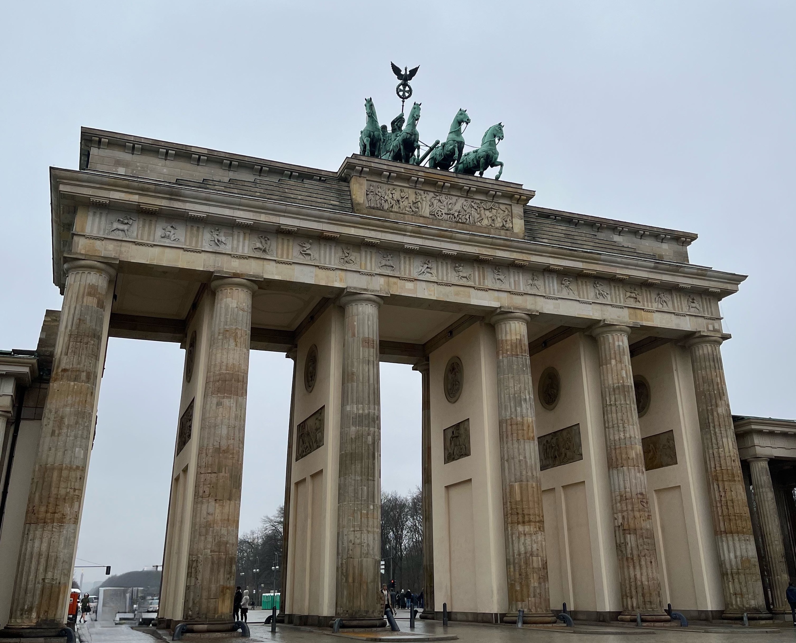

Reichstag Building
The Reichstag (Officially "Plenarbereich Reichstagsgebäude") a historic legislative government building on Platz der Republik in Berlin, is the seat of the German Bundestag. It is also the meeting place of the Federal Convention, which elects the President of Germany. The Neo-Renaissance building was built between 1884 and 1894 in the Tiergarten district on the left bank of the River Spree to plans by the architect Paul Wallot. It housed both the Reichstag legislature of the German Empire and the Reichstag of the Weimar Republic. The Reich's Federal Council also originally met there. The building was initially used by the Reichstag for Nazi Germany, but severe damage in the Reichstag fire of 1933 prevented further use and the Reichstag moved to the nearby Kroll Opera House. The 1933 fire became a pivotal event in the entrenchment of the Nazi regime. The building took further damage during the Second World War and its symbolism made it an important target for the Red Army during the Battle of Berlin.

Brandenburg Gate
The Brandenburg Gate (Brandenburger Tor) is an 18th-century neoclassical monument in Berlin, built on the orders of the King of Prussia Frederick William II after restoring the Orangist power by suppressing the Dutch popular unrest. One of the best-known landmarks of Germany, it was built on the site of a former city gate that marked the start of the road from Berlin to the town of Brandenburg an der Havel, which used to be the capital of the Margraviate of Brandenburg. Throughout its existence, the Brandenburg Gate was often a site for major historical events and is today considered not only a symbol of the tumultuous histories of Germany and Europe, but also of European unity and peace.

Berlin Wall memorial
The Berlin wall memorial (Gedenkstätte Berliner Mauer) commemorates the division of Berlin by the Berlin Wall and the deaths that occurred there. The monument was created in 1998 by the Federal Republic of Germany and the Federal State of Berlin. It is located on Bernauer Straße at the corner of Ackerstraße and includes a Chapel of Reconciliation, the Berlin Wall Documentation Centre, a 60-metre (200 ft) section of the former border, a window of remembrance and a visitor center. The idea of a memorial was suggested by the Deutsches Historisches Museum (German Historical Museum) on behalf of the federal government of Berlin, and architects Kohlhoff & Kohlhoff were commissioned to design it. The cost of the competition and completion was 2.2 million Marks. The federal government took over the construction costs, while the state covers the maintenance costs. On 11 September 2008 the Berlin House of Representatives approved the opening of the memorial on the anniversary of the day that the Berlin Wall fell.

Museum Island
The Museum Island (Museumsinsel) is a museum complex on the northern part of the Spree Island in the historic heart of Berlin, Germany. It is one of the capital's most visited sights and one of the most important museum sites in Europe. Originally, built from 1830 to 1930, by order of the Prussian Kings, according to plans by five architects, Museum Island was designated a UNESCO World Heritage Site in 1999 because of its testimony to the architectural and cultural development of museums in the 19th and 20th centuries. It consists of the Altes Museum, the Neues Museum, the Alte Nationalgalerie, the Bode-Museum and the Pergamonmuseum.

Berliner Dom
The Berlin Cathedral (Berliner Dom), also known as the Evangelical Supreme Parish and Collegiate Church, is a monumental German Protestant church and dynastic tomb (House of Hohenzollern) on the Museum Island in central Berlin. Having its origins as a castle chapel for the Berlin Palace, several structures have served to house the church since the 15th century. The present collegiate church was built from 1894 to 1905 by order of Emperor William II according to plans by Julius Raschdorff in Renaissance and Baroque Revival styles. The listed building is the largest Protestant church in Germany and one of the most important dynastic tombs in Europe. In addition to church services, the cathedral is used for state ceremonies, concerts and other events. Since the demolition of the Memorial Church (Denkmalskirche) section on the north side by the East German authorities in 1975, the Berlin Cathedral has consisted of the large Sermon Church (Predigtkirche) in the center, and the smaller Baptismal and Matrimonial Church (Tauf- und Traukirche) on the south side and the Hohenzollern crypt (Hohenzollerngruft), which covers almost the entire basement. Damaged during the Allied bombing in World War II, the cathedral's original interior was restored by 2002. Currently there is discussion about restoring the historical exterior as well.